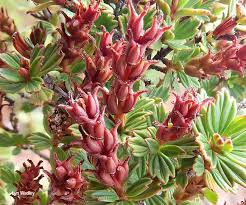

Myrothamnaceae
Resurrection Plant Family
Myrothamnaceae is a small but extraordinary family comprising the single genus Myrothamnus, with just two species. These small, woody shrubs are confined to arid regions of southern/eastern Africa and Madagascar. They are famously known as 'resurrection plants' due to their remarkable ability to withstand extreme desiccation (poikilohydry), appearing dead during drought but rapidly rehydrating and resuming life upon watering. Myrothamnaceae belongs to the order Gunnerales.
Overview
The Myrothamnaceae family, represented solely by the genus Myrothamnus, provides a stunning example of adaptation to harsh environments. Consisting of only two species of small shrubs, the family's hallmark is its poikilohydric nature – the ability to tolerate near-complete water loss, entering a dormant, seemingly lifeless state, and then quickly recovering upon rehydration. This 'resurrection' capability allows Myrothamnus to thrive in seasonally dry, rocky habitats in parts of Africa and Madagascar where few other woody plants can survive.
During drought, the leaves fold up, stems become brittle, and the plant turns reddish-black. Biochemically, the cells accumulate protective compounds like trehalose and specific antioxidants, allowing cellular structures to remain intact despite dehydration. When rain returns, the plants can rehydrate, turn green, and resume photosynthesis within hours or days. Myrothamnus species are dioecious (having separate male and female plants) with highly reduced, wind-pollinated flowers. They often possess aromatic, resinous foliage used in traditional medicine and local customs.
Despite its specialized features and restricted distribution, Myrothamnaceae is phylogenetically linked to the vastly different Gunneraceae (giant herbs) within the order Gunnerales, highlighting significant evolutionary divergence.
Quick Facts
- Scientific Name: Myrothamnaceae
- Common Name: Resurrection Plant family
- Number of Genera: 1 (Myrothamnus)
- Number of Species: 2 (M. flabellifolius, M. moschatus)
- Distribution: Disjunct: Southern Africa (from Kenya southwards) and Madagascar.
- Habitat: Seasonally arid, rocky outcrops and slopes.
- Evolutionary Group: Core Eudicots - Order Gunnerales
Key Characteristics (of Myrothamnus)
Growth Form and Habit
Small, woody, multi-stemmed shrubs, typically less than 1 meter tall. Highly adapted to desiccation (poikilohydric); stems and leaves appear brittle and dead when dry but revive quickly with moisture. Plants are dioecious (separate male and female individuals).
Leaves
Leaves are small (usually less than 1.5 cm long), opposite and decussate (arranged in right-angled pairs). They are distinctively fan-shaped (flabellate) with serrated margins at the apex and prominent parallel veins. Leaves are somewhat fleshy when hydrated, aromatic and resinous, folding inwards along the veins and turning reddish-black upon drying.
Inflorescence
Inflorescences are small, dense, terminal, bracteate spikes or catkin-like structures, bearing tiny unisexual flowers.
Flowers
Flowers are highly reduced, unisexual, lacking a perianth (sepals and petals), and adapted for wind pollination.
- Male Flowers: Consist of 3-4 (sometimes up to 8) stamens with short filaments and basifixed anthers that are often fused together, opening by longitudinal slits.
- Female Flowers: Consist of a superior ovary composed of 2 (or 3-4) fused carpels, each tapering into a separate style with a reddish, plumose (feathery) stigma adapted for catching airborne pollen.
Fruits and Seeds
The fruit is a small, dry, brownish, septicidal capsule (splitting along the partitions between carpels) that develops from the female flower. It contains numerous very small, dust-like seeds.
Chemical Characteristics
Plants contain tannins and ellagic acid. They are rich in phenolic compounds, including galloylquinic acids and arbutin derivatives, which act as antioxidants and may play a role in desiccation tolerance. The accumulation of sugars like trehalose during drying is crucial for protecting cellular membranes and proteins. Aromatic resins contribute to the characteristic scent.
Field Identification
Identifying Myrothamnaceae means recognizing the distinctive features of Myrothamnus, especially its unique habit and leaves.
Primary Identification Features
- Resurrection Habit: The most striking feature. Look for small woody shrubs that appear dead and brittle when dry (reddish-black, folded leaves) but are green and leafy when hydrated.
- Leaf Shape and Arrangement: Small (<1.5 cm), opposite, decussate, fan-shaped leaves with serrated tips.
- Habitat and Distribution: Found only in seasonally dry, rocky areas in southern/eastern Africa and Madagascar.
Secondary Identification Features
- Aroma: Crushed leaves are often aromatic and resinous.
- Inflorescence/Infructescence: Small, dense, terminal spikes bearing tiny flowers or small brown capsules.
- Woody Stems: Even when dry, the shrubby, multi-stemmed woody structure is apparent.
Common Confusion Points
- Other Resurrection Plants: While other plants exhibit desiccation tolerance (some ferns, mosses, Selaginella, Velloziaceae), Myrothamnus is distinguished by its combination of being a woody shrub with opposite, fan-shaped leaves.
- Small arid-adapted shrubs: Many unrelated shrubs occur in similar habitats, but none combine the resurrection capability with the specific opposite, fan-shaped leaves of Myrothamnus.
- Sister Family (Gunneraceae): Completely different; Gunnera species are typically giant herbs found in moist environments.
Field Guide Quick Reference (Myrothamnus)
Look For:
- Small woody shrub
- Resurrection capability (dry/brittle vs. green/leafy)
- Small, opposite, fan-shaped leaves
- Serrated leaf tips
- Arid, rocky habitat (Africa/Madagascar)
- Aromatic/resinous leaves
Key Features:
- Poikilohydric
- Dioecious (separate male/female plants)
- Flowers tiny, apetalous, in spikes
- Fruit a small capsule
- Reddish-black color when dry
The Two Species of Myrothamnus
The Myrothamnaceae family consists of just two very similar species in the genus Myrothamnus:

Myrothamnus flabellifolius
Resurrection Plant
This is the more widespread species, found in rocky habitats from Kenya southwards through eastern and southern Africa to South Africa. It forms small, twiggy shrubs characterized by their fan-shaped, opposite leaves and remarkable ability to survive dessication. It is widely used in traditional medicine across its range.

Myrothamnus moschatus
(Malagasy Resurrection Plant)
This species is endemic to Madagascar, occurring in similar rocky, seasonally dry habitats. It is morphologically very similar to M. flabellifolius, differing perhaps slightly in leaf size or resin characteristics, but primarily distinguished by its geographic isolation on Madagascar. Like its African counterpart, it exhibits poikilohydry.
Phylogeny and Classification
Myrothamnaceae is one of the two families comprising the order Gunnerales, a basal lineage within the core eudicots. Molecular phylogenetic studies firmly establish Myrothamnaceae (containing only Myrothamnus) as the sister group to Gunneraceae (containing only Gunnera).
The close relationship between these two families is remarkable given their extreme morphological and ecological divergence: Myrothamnaceae are small, desiccation-tolerant shrubs of arid lands, while Gunneraceae are often gigantic herbs of moist environments. This pairing underscores the power of molecular data in revealing evolutionary relationships that might be obscured by dramatic adaptation.
The order Gunnerales, containing Myrothamnaceae and Gunneraceae, occupies the critical position as sister to the Pentapetalae, the clade that includes nearly all other core eudicot diversity. Therefore, Myrothamnaceae is part of a lineage that diverged very early in the evolution of core eudicots.
Position in Plant Phylogeny
- Kingdom: Plantae
- Clade: Angiosperms (Flowering plants)
- Clade: Eudicots
- Clade: Core Eudicots
- Order: Gunnerales
- Family: Myrothamnaceae
Evolutionary Significance
The Myrothamnaceae family holds considerable evolutionary significance:
- Extreme Adaptation (Poikilohydry): Represents one of the most striking examples of desiccation tolerance in woody angiosperms, making it a key model system for studying the physiological and genetic basis of this trait.
- Basal Core Eudicot Placement (within Gunnerales): Its position helps anchor phylogenetic analyses and understand early core eudicot evolution.
- Morphological Divergence: The extreme contrast with its sister family Gunneraceae highlights the potential for rapid or deep evolutionary divergence in form and function even between closely related lineages.
- Biogeography: The restricted Africa-Madagascar distribution provides clues about historical climate patterns and plant migrations in the region.